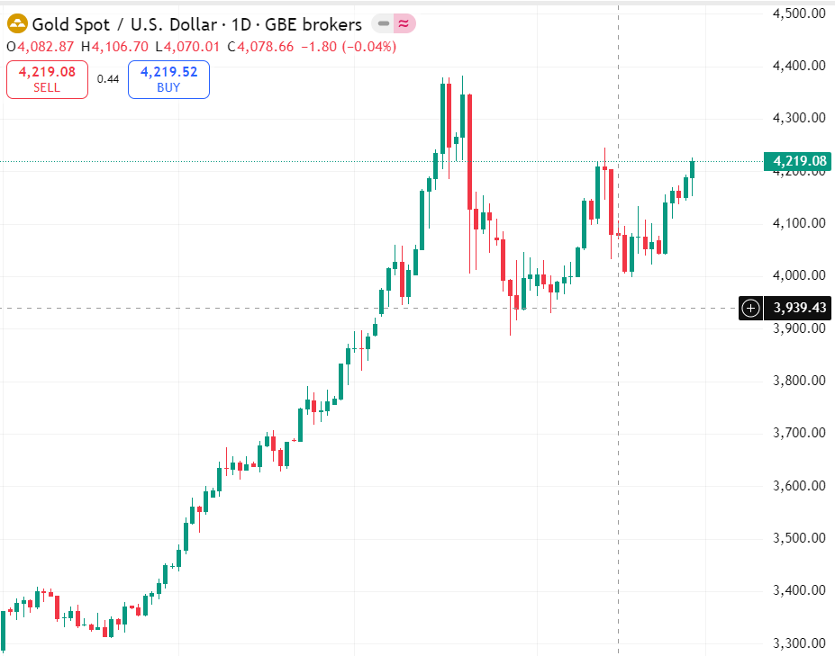

เทคนิคดูกราฟทองสำหรับมือใหม่ (เข้าใจง่ายใน 5 นาที)
เผยแพร่เมื่อ 30 พฤศจิกายน 2025

กราฟทองคืออะไร
กราฟทองคือการแสดงการเคลื่อนไหวของราคาทองแบบเรียลไทม์ในตลาดฟอเร็กซ์...
การดูแนวรับและแนวต้าน
แนวรับคือโซนที่ราคามักเด้งขึ้น ส่วนแนวต้านคือโซนที่ราคามักลง...
การดูเส้นเทรนด์ไลน์
เทรนด์ไลน์ช่วยบอกทิศทางของตลาด เช่น เทรนด์ขึ้น เทรนด์ลง...
สัญญาณกลับตัว
เช่น Doji, Pin Bar, Engulfing ซึ่งบอกสัญญาณว่าราคาอาจกลับตัว...